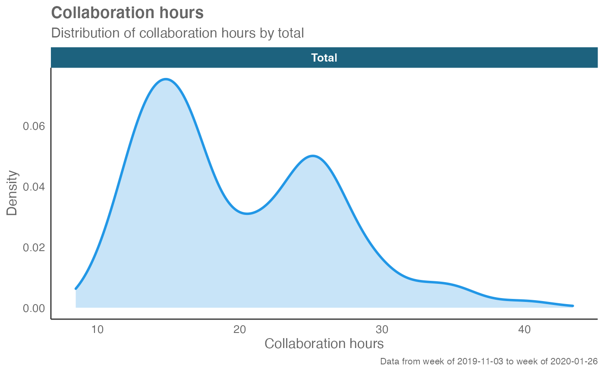
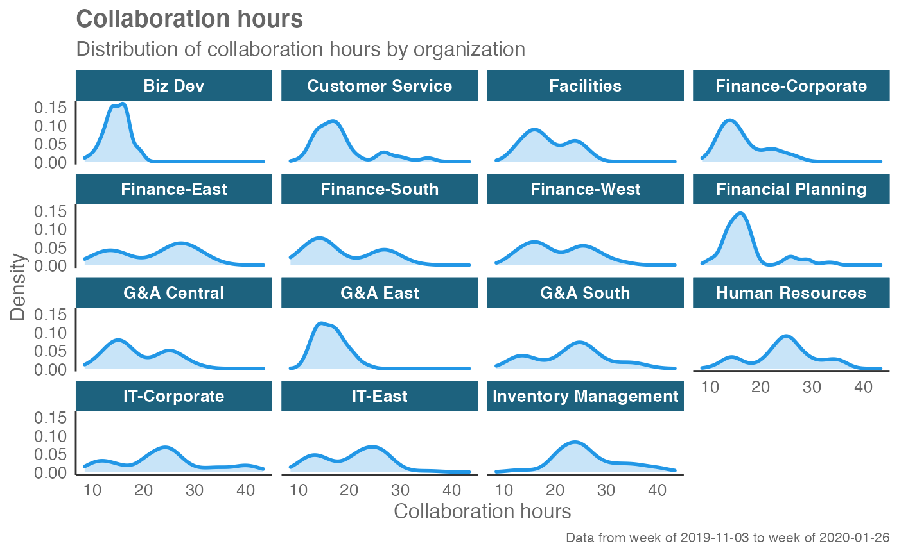
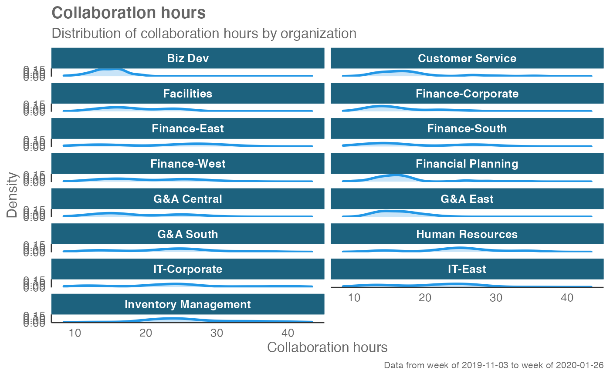

Provides an analysis of the distribution of a selected metric. Returns a faceted density plot by default. Additional options available to return the underlying frequency table.
create_density(
data,
metric,
hrvar = "Organization",
mingroup = 5,
ncol = NULL,
return = "plot"
)A Standard Person Query dataset in the form of a data frame.
String containing the name of the metric, e.g. "Collaboration_hours"
String containing the name of the HR Variable by which to split
metrics. Defaults to "Organization". To run the analysis on the total
instead of splitting by an HR attribute, supply NULL (without quotes).
Numeric value setting the privacy threshold / minimum group size. Defaults to 5.
Numeric value setting the number of columns on the plot. Defaults
to NULL (automatic).
String specifying what to return. This must be one of the following strings:
"plot"
"table"
"data"
"frequency"
See Value for more information.
A different output is returned depending on the value passed to the returnargument:
"plot": 'ggplot' object. A faceted density plot for the metric.
"table": data frame. A summary table for the metric.
"data": data frame. Data with calculated person averages.
"frequency: list of data frames. Each data frame contains the
frequencies used in each panel of the plotted histogram.
Other Flexible:
create_bar_asis(),
create_bar(),
create_boxplot(),
create_bubble(),
create_dist(),
create_fizz(),
create_hist(),
create_inc(),
create_line_asis(),
create_line(),
create_period_scatter(),
create_rank(),
create_sankey(),
create_scatter(),
create_stacked(),
create_tracking(),
create_trend(),
period_change()
# Return plot for whole organization
create_density(sq_data, metric = "Collaboration_hours", hrvar = NULL)

# Return plot
create_density(sq_data, metric = "Collaboration_hours", hrvar = "Organization")

# Return plot but coerce plot to two columns
create_density(sq_data, metric = "Collaboration_hours", hrvar = "Organization", ncol = 2)

# Return summary table
create_density(sq_data,
metric = "Collaboration_hours",
hrvar = "Organization",
return = "table")
#> # A tibble: 15 × 6
#> group mean median max min Employee_Count
#> <chr> <dbl> <dbl> <dbl> <dbl> <int>
#> 1 Biz Dev 14.7 15.0 19.9 8.46 75
#> 2 Customer Service 18.3 16.9 35.6 10.4 61
#> 3 Facilities 18.6 17.3 27.1 10.9 72
#> 4 Finance-Corporate 16.3 15.2 27.6 9.10 68
#> 5 Finance-East 22.2 25.1 33.5 9.44 70
#> 6 Finance-South 18.6 15.8 32.8 9.34 81
#> 7 Finance-West 20.6 19.6 33.5 11.7 73
#> 8 Financial Planning 17.1 15.9 34.2 9.49 75
#> 9 G&A Central 18.9 16.5 30.5 10.1 57
#> 10 G&A East 16.2 16.0 23.7 11.0 65
#> 11 G&A South 23.1 24.2 37.9 11.1 76
#> 12 Human Resources 24.4 25.0 35.8 10.8 71
#> 13 IT-Corporate 23.7 23.9 43.4 9.26 68
#> 14 IT-East 20.6 21.8 35.5 9.87 62
#> 15 Inventory Management 26.2 25.0 41.7 12.1 60